Graduação
Bacharel em Engenharia de Produção
Universidade Tecnológica Federal do Paraná (UTFPR).
Gamificação & Design Comportamental · Gestão de Projetos · Especialista de RH
Engenheiro de Produção com anos de Controladoria, hoje Especialista de RH na Apetit Serviços de Alimentação (DelaFoods). Uno o rigor de quem mede processo com o olhar de quem desenha experiência — e transformo gamificação em engajamento com governança, indicador e retorno.
Aberto a conversas sobre engajamento, aprendizagem e gamificação que geram resultado mensurável.
TCC do MBA em Gestão de Projetos (USP Esalq), publicado em revista
Especialização em Gamificação com Kevin Werbach
em inovação, ESG e impacto social, em 2025 e 2026
Quem já trabalhou comigo
“Além de ter se mostrado sempre uma pessoa de extrema gentileza e ética, o Marcus me surpreendeu pela facilidade de aprendizado e capacidade logo no início.”
“[…] foi nítida a rápida evolução do Marcus, não só em capacidade técnica e analítica mas também em desenvoltura e autonomia.”
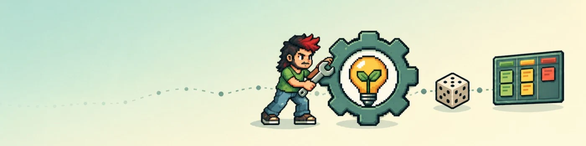
» NOVO JOGADOR ENTROU NA PARTIDA
Classe: Engenheiro de Engajamento · Guilda: Apetit / DelaFoods
STATUS: aberto a conversas sobre engajamento, aprendizagem e gamificação que geram resultado mensurável.
▶ COMO JOGAR
★ MISSÃO PRINCIPAL
Não é sobre ponto e medalha. É sobre entender o que move as pessoas — e provar com dados que funcionou.
ABRIR O ATLAS ▶★ ESCOLHA SUA CLASSE PARA COMEÇAR
Ela só muda a rota sugerida no mapa e o nível de detalhe. Dá para trocar quando quiser.
Sobre mim
Na Controladoria aprendi a gostar de dados e descobri que o que eu queria resolver estava nas pessoas por trás da planilha. Hoje uno os dois lados: rigor analítico e design de experiência, inclusive a identidade visual dos programas que lidero.
Origem
Engenharia de Produção
Processos, eficiência e a lógica de medir antes de mudar.
Base analítica
Controladoria
Orçamento, reajustes, BI e automação — onde aprendi a gostar de dados.
Hoje
Especialista de RH — Apetit Serviços de Alimentação (DelaFoods)
Gamificação, aprendizagem, engajamento e ESG com governança de projeto.
Do diagnóstico à medição, o mesmo método em todos os projetos.
Diagnosticar com dados
Antes de propor, meço. No ESG à Mesa, comecei mapeando o que a empresa já fazia de certo, e esse diagnóstico virou dois cases premiados.
Ver em ESG à Mesa →Desenhar para o comportamento
Facilitar vale mais do que pressionar. No UNIAP+, turmas automáticas e atividades curtas tiraram o atrito do caminho.
Ver em UNIAP+ →Implantar com governança
Papéis claros, um padrão comum e poucos indicadores. No DelaProject, os projetos de inovação passaram a viver num portfólio único.
Ver em DelaProject →Medir e ajustar
O resultado é conferido depois da entrega. Na EcoCaneca, o real foi comparado à projeção com base nas notas fiscais.
Ver em EcoCaneca →Graduação
Bacharel em Engenharia de Produção
Universidade Tecnológica Federal do Paraná (UTFPR).
Especialização
Gamificação — Wharton
University of Pennsylvania, com Kevin Werbach, uma das maiores referências mundiais no tema.
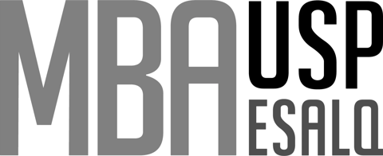
MBA · Nota máxima 10,0
Gestão de Projetos — USP Esalq
TCC sobre transformação digital e governança da inovação, publicado na revista Estratégia e Soluções.
Ler o artigo ↗Diversidade como método
Sou um profissional LGBTQIAPN+ e levo a diversidade para a forma de trabalhar: espaços diversos pensam melhor, e isso aparece no desenho de cada projeto.
Newsletter no LinkedIn
Projeto em Jogo
Onde discuto gamificação, gestão de projetos e ESG na prática.
Últimas edições
▸ LORE DO PERSONAGEM · trajetória
CAP. 1
ENGENHARIA DE PRODUÇÃO
Aprendeu a ler processos e caçar desperdício.
CAP. 2
CONTROLADORIA
Dominou os dados. Mas o enigma estava nas pessoas por trás da planilha.
CAP. 3 · ATUAL
ESPECIALISTA DE RH
Usa gamificação e design comportamental para engajar colaboradores em todo o Brasil.
↻ CICLO DO JOGADOR · como eu trabalho
1 · DIAGNOSTICAR
medir antes de mudar
2 · DESENHAR
facilitar o comportamento
3 · IMPLANTAR
com papéis e governança
4 · MEDIR
conferir e ajustar
◆ INVENTÁRIO DE FORMAÇÃO · formação
[COMUM]
Bacharelado · Eng. de Produção
Guilda de origem: UTFPR
[RARO]
Gamificação · Wharton
Mentor: Kevin Werbach
PASSIVA: DIVERSIDADE
Profissional LGBTQIAPN+. Bônus permanente: times diversos pensam melhor.
● TRANSMISSÃO AO VIVO
Newsletter "Projeto em Jogo" no LinkedIn: gamificação, gestão e ESG.
ÚLTIMOS EPISÓDIOS
HABILIDADE ESPECIAL: FORJA DE IDENTIDADES
Criou os logotipos dos programas que lidera: UNIAP+ · Bem-Estar DELA · Dela Conecta · ESG à Mesa.
💬 MENSAGEM DE UM ALIADO · recomendação
“Além de ter se mostrado sempre uma pessoa de extrema gentileza e ética, o Marcus me surpreendeu pela facilidade de aprendizado e capacidade logo no início.”
“[…] foi nítida a rápida evolução do Marcus, não só em capacidade técnica e analítica mas também em desenvoltura e autonomia.”
— Gabriel Saito Bertho · mentor · > ver no LinkedIn
Projetos em destaque
Cada case abre com o resultado. O detalhamento completo (situação, tarefa, ação e resultado) fica a um clique.
▸ ATLAS DA CARREIRA
Cada empresa é um continente; cada projeto, uma região. Clique numa região para abrir o case.
CONTINENTE APETIT
Ilhas entre as nuvens, a leste: expansões futuras, as próximas empresas da jornada.
◆ REGIÕES
LEGENDA
região explorada
★ rota sugerida para sua classe
próxima região sugerida
névoa quadriculada = região em cartografia (case em produção)
Reconhecimentos
🏆 SALA DE TROFÉUS · prêmios reais
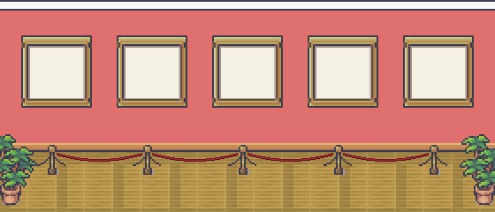
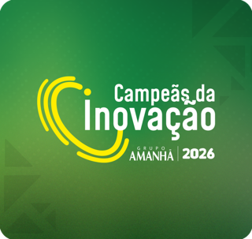
Campeãs da Inovação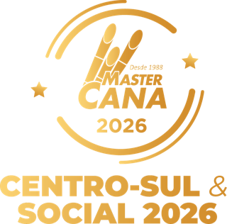
Mastercana Social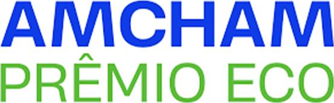
ECO Amcham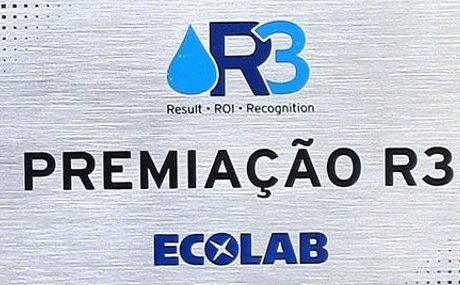
R3 EcolabClique num quadroToque num quadro ou num prêmio para abrir o projeto premiado.
Campeãs da Inovação 2026
Case UNIAP+
Woman’s Legacy 2026
Case Bem-Estar DELA
Mastercana Social 2026
Case Bem-Estar DELA
ECO Amcham 2025
Case UBC · diagnóstico do ESG à Mesa
R3 Ecolab 2025
Case Ecolab · diagnóstico do ESG à Mesa
Case 01 · Transformação digital · Aprendizagem corporativa
Integração entre o sistema de RH (ERP) e a plataforma de aprendizagem (LMS) para a matriz, as fábricas e centenas de restaurantes em todo o Brasil.
Meu papel: liderança de arquitetura de dados, regras de negócio, especificação de APIs e governança pedagógica.
Em implantação · lançamento previsto para janeiro de 2027
Prêmio Campeãs da Inovação 2026
Projeto vencedor
matrículas e grupos montados à mão no fluxo desenhado
do histórico preservado em promoções e transferências, por regra de negócio
matriz, fábricas e centenas de restaurantes na mesma integração
Situação
Tarefa
Desenhar uma integração ponta a ponta que matricule, agrupe, recicle e comprove treinamento sem intervenção manual — mantendo autonomia do RH e trilha de auditoria.
Ação
Integração automatizada
O cadastro de pessoas é sincronizado do ERP para a plataforma, com dados padronizados e acesso seguro.
Tríplice associação de coortes
Cada colaborador entra automaticamente em turmas por cargo, por local e por perfil, definidas por regras de negócio.
Autonomia do RH
Tabelas de correspondência na própria plataforma: o RH inclui novos cargos e locais sem reprogramar a integração.
Trilhas cíclicas
As reciclagens obrigatórias de segurança e qualidade são liberadas automaticamente todo mês.
Multimodalidade
Jogos curtos para a operação, presença validada por tempo de tela nas formações de liderança e chamada pelo celular nos treinamentos presenciais, com assinatura eletrônica.
Regras de transição
Em promoções e transferências, a tela fica limpa e o histórico é 100% preservado. O saldo de XP e moedas é blindado.
Resultado
Fluxo da integração
CAMPEÃS DA INOVAÇÃO 2026
troféu lendário
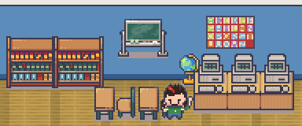
⚠ O DESAFIO · problema de negócio
O GARGALO MANUAL
☺ SEU PAPEL NA PARTY · meu papel
Arquiteto de Dados & Mestre de Governança Pedagógica
Mapa: ERP ⇄ plataforma de aprendizagem · matriz · fábricas · centenas de restaurantes
▣ MISSÕES CUMPRIDAS · entregas
✦ LOOT EM PREPARO · resultados esperados
◷ STATUS: premiado na estruturação · lançamento em jan/2027
0
ações manuais no fluxo desenhado
∞
histórico preservado para auditoria
$
moedas trocáveis por produtos reais
❓ E SE FOSSE VOCÊ? · desafio opcional, sem resposta errada
Milhares de pessoas precisam fazer treinamentos obrigatórios todo mês. Muitas têm pouco tempo e pouca familiaridade com tecnologia. O que mais ajuda a garantir que todas concluam?
O CONCEITO POR TRÁS
Modelo de Fogg: um comportamento acontece quando motivação, facilidade e um bom lembrete se encontram. Facilitar costuma ser mais eficaz do que pressionar.
🔓 BASTIDOR DESBLOQUEADO
Em treinamentos obrigatórios, a gamificação deve reduzir atrito e dar feedback, nunca virar pressão. Por isso o UNIAP+ protege o saldo de XP e moedas de cada pessoa, mesmo quando ela muda de cargo ou de unidade.
OBJETIVO DE NEGÓCIO · 6Ds
Eliminar a gestão manual de matrículas e garantir a conformidade dos treinamentos obrigatórios em escala nacional.
COMPORTAMENTOS-ALVO
Concluir trilhas e reciclagens mensais, registrar presença e permitir que a gerente faça a chamada pelo celular.
JOGADORES
Da liderança na matriz à operação de cozinha, com níveis de letramento muito diferentes. Por isso cada público recebeu um formato próprio.
DINÂMICAS → MECÂNICAS → COMPONENTES
Progressão (trilhas cíclicas) → feedback e recompensas → XP, moedas virtuais, loja de trocas e jogos curtos.
GATILHOS DE FOGG · B=MAT
Facilitadores: jogos curtos de baixo atrito e chamada pelo celular para a gerente. Sinais: liberação mensal automática das reciclagens.
AUTODETERMINAÇÃO
Competência: desafios curtos e alcançáveis. Autonomia: trilhas online de autogestão, no ritmo de cada um.
SAPC
Coisas (Stuff): as moedas viram produtos reais na loja de trocas. Status: o histórico e o saldo acompanham o colaborador em toda a carreira.
ÉTICA · ROSS SMITH
Treinamento obrigatório é comportamento do próprio cargo. Aqui a gamificação trabalha com feedback e baixo atrito, e a Imunidade de Gamificação garante que nenhuma mudança cadastral zere o esforço do jogador.
Case 02 · Gestão de projetos · Pesquisa aplicada
A estruturação da gestão de projetos da Apetit, que também se tornou o meu TCC no MBA em Gestão de Projetos da USP Esalq, aprovado com nota máxima e publicado em revista.
Meu papel: líder do projeto e autor da pesquisa.
nota do TCC no MBA da USP Esalq
plataforma única para o portfólio de projetos
famílias de indicadores: resultado e execução
em licenças: plataforma de código aberto
Situação
Os projetos da empresa estavam fragmentados em registros e documentos soltos, sem visão integrada, sem papéis padronizados e sem indicadores comuns para entender atrasos.
Tarefa
Estruturar a gestão de projetos e o portfólio de inovação, ampliando a visibilidade estratégica e fortalecendo a cultura de inovação, sem custo de licenças.
Ação · 3 frentes
Plataforma
Adaptação do OpenProject, de código aberto, à realidade da empresa, com estrutura analítica (EAP) e fluxos de aprovação padronizados.
Indicadores
Indicadores de resultado (impacto e entregas) e de execução (eficiência da gestão), com Gantt, 5 Porquês e Matriz Esforço × Impacto para diagnosticar atrasos.
Guia e portfólio
Guia prático com modelos prontos e exemplos, papéis definidos (líderes, mentores, jogadores, exploradores) e projetos organizados por linhas temáticas.
Resultado
REGIÃO 02 · OBSERVATÓRIO DA GOVERNANÇA · CONTINENTE APETIT
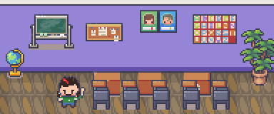
TCC NOTA 10,0
artigo publicado ↗
⚠ O DESAFIO · problema de negócio
OS MAPAS ESPALHADOS
Projetos registrados cada um de um jeito, em lugares diferentes, sem uma visão do todo.
☺ SEU PAPEL NA PARTY · meu papel
Cartógrafo da governança & pesquisador
O projeto virou TCC e o TCC virou artigo: prática e teoria no mesmo mapa.
◆ CLASSES DA GUILDA DA INOVAÇÃO · papéis definidos no projeto
[LÍDER]
conduz o projeto do início ao fim
[MENTOR]
orienta e apoia as decisões
[JOGADOR]
executa as entregas
[EXPLORADOR]
investiga ideias e novas frentes
▣ MISSÕES CUMPRIDAS · entregas
✦ LOOT DA VITÓRIA · resultados
1
portfólio de inovação centralizado, no lugar dos registros espalhados
◆
papéis claros e uma estrutura comum para todos os projetos
10,0
TCC com nota máxima e artigo publicado na revista Estratégia e Soluções
❓ E SE FOSSE VOCÊ? · desafio opcional, sem resposta errada
Uma empresa tem dezenas de projetos registrados em planilhas e documentos soltos, cada um de um jeito. Qual é o melhor primeiro passo para ganhar visibilidade?
O CONCEITO POR TRÁS
Governança começa por clareza: quem faz o quê, onde a informação fica e como o avanço é medido. A ferramenta vem depois.
🔓 BASTIDOR DESBLOQUEADO
Os papéis definidos para o portfólio de inovação (líderes, mentores, jogadores e exploradores) usam nomes que lembram papéis de jogo: a linguagem da gamificação entrou na própria estrutura de governança.
OBJETIVO DE NEGÓCIO · 6Ds
Dar visibilidade estratégica aos projetos, padronizar processos e fortalecer a cultura de inovação.
COMPORTAMENTO-ALVO
Líderes registram e acompanham seus projetos na plataforma, seguindo uma estrutura comum.
SUPORTE · SCAFFOLDING
O guia prático, com modelos prontos e exemplos, sustenta quem ainda está aprendendo a gerir projetos.
FACILITADOR · FOGG (B=MAT)
Layouts prontos reduzem o esforço de começar um projeto do jeito certo.
IDENTIDADE E RELACIONAMENTO
Papéis como líder, mentor, jogador e explorador dão a cada pessoa um lugar claro na comunidade de inovação.
FEEDBACK
Indicadores de resultado e de execução mostram o avanço; ferramentas como os 5 Porquês e a Matriz Esforço × Impacto ajudam a entender os atrasos, não a punir.
Case 03 · ESG · Operações de food service
Projeto para criar um modelo de restaurante alinhado ao ESG em estrutura, processos e princípios. O ponto de partida foi entender o que a Apetit já fazia de certo, e esse diagnóstico virou dois cases premiados.
Meu papel: líder do projeto, com a estruturação das informações e a elaboração dos cases premiados.
Modelo definido em setembro de 2026 · piloto em uma unidade em 2027
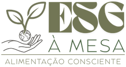
Prêmio R3 Ecolab 2025
Práticas da Apetit · impacto de 2024
Prêmio ECO Amcham 2025
Case UBC · categoria Processos
Práticas da Apetit reconhecidas nos cases que estruturei
litros de água economizados por ano
de perda de proteína, antes 20% (196 t/ano preservadas)
acidentes com objetos cortantes em 10 anos
Situação
A Apetit já tinha boas práticas ambientais e de segurança, mas espalhadas e pouco documentadas. Faltava um padrão de restaurante que reunisse tudo e pudesse ser verificado.
Tarefa
Liderar a criação de um modelo de restaurante ESG, começando por mapear e comprovar, com dados, o que a empresa já fazia de certo.
Ação · do diagnóstico ao modelo
1 · 2025
Diagnóstico
Mapear as práticas e os indicadores que a empresa já tinha: água, perdas, plástico e segurança.
2 · 2025
Cases premiados
Estruturar as informações e escrever os cases: R3 Ecolab e ECO Amcham (UBC: “A Gestão em Cada Corte”).
3 · set 2026
Modelo definido
4 pilares, 16 critérios objetivos, dupla checagem e selo próprio.
4 · 2027
Unidade piloto
Uma unidade servirá de modelo para validar o funcionamento antes de expandir.
4 pilares operacionais · 16 critérios
Governança
O modelo prevê dupla checagem: autoavaliação mensal da gerente de unidade e auditoria semestral do supervisor regional. Unidades aderentes e regulares no período receberão o Selo ESG à Mesa.
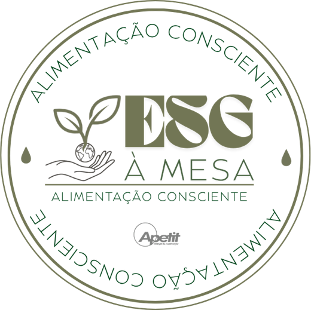
O que o piloto vai verificar
Abastecimento centralizado
insumos vindos da própria cadeia da empresa
Teto de sobra limpa
limite per capita de desperdício
Itens críticos
validados pela auditoria regional
Resultado até aqui
Práticas da Apetit reconhecidas nos cases
| Frente | Indicador | Resultado | Chancela |
|---|---|---|---|
| Eficiência hídrica | Economia direta de água nas operações | 34,7 milhões de litros/ano | Prêmio R3 Ecolab 2025 |
| Cadeia de proteínas | Redução do desperdício no processamento | De 20% para 0,67% (196 t/ano preservadas) | Prêmio ECO Amcham 2025 |
| Segurança do trabalho | Acidentes operacionais com cortes | Redução de 48,9% (série 2014–2024) | Case UBC (Amcham) |
| Redução de plásticos | Embalagens e descartáveis evitados | 1.556 kg de plástico (+100 mil garrafas PET) | Prêmio R3 Ecolab 2025 |
Fonte: indicadores divulgados publicamente no blog da Apetit e nos cases premiados.
Competências: diagnóstico com dados, estruturação de indicadores, governança e auditoria, e storytelling de dados para bancas de premiação.
REGIÃO 03 · PLANÍCIE SUSTENTÁVEL · CONTINENTE APETIT
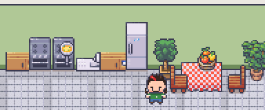
R3 ECOLAB 2025
troféu do diagnóstico
ECO AMCHAM 2025
troféu do diagnóstico
⚠ O DESAFIO · problema de negócio
AS BOAS PRÁTICAS INVISÍVEIS
Ações que funcionavam, mas espalhadas, pouco documentadas e sem um padrão de restaurante.
☺ SEU PAPEL NA PARTY · meu papel
Líder da expedição & cronista dos cases premiados
Aliados: Ecolab · UBC · supervisores regionais · gerentes de unidade
◆ OS 4 PILARES DA PLANÍCIE · 16 CRITÉRIOS · modelo de gestão
[PILAR I]
Desperdício & operação segura
[PILAR II]
Suprimentos & economia circular
[PILAR III]
Utilidades & infraestrutura
[PILAR IV]
Cultura, inclusão & saúde
▣ ATOS DA CAMPANHA · fases do projeto
★ BADGE DO MUNDO REAL
O Selo ESG à Mesa foi desenhado para ser exibido nos restaurantes aderentes e regulares no período: uma conquista pública, que precisa ser mantida a cada ciclo de auditoria.
Selo e logotipo criados pelo jogador.
✦ LOOT DO DIAGNÓSTICO · práticas da Apetit premiadas
EFICIÊNCIA HÍDRICA
34,7 milhões de litros/ano
Prêmio R3 Ecolab 2025
CADEIA DE PROTEÍNAS
De 20% para 0,67% (196 t/ano preservadas)
Prêmio ECO Amcham 2025
SEGURANÇA DO TRABALHO
Redução de 48,9% (série 2014–2024)
Case UBC (Amcham)
REDUÇÃO DE PLÁSTICOS
1.556 kg de plástico (+100 mil garrafas PET)
Prêmio R3 Ecolab 2025
❓ E SE FOSSE VOCÊ? · desafio opcional, sem resposta errada
Como garantir que um selo de "restaurante sustentável" continue tendo credibilidade com o passar do tempo?
O CONCEITO POR TRÁS
Reconhecimento (status) só motiva enquanto é confiável. Por isso, conquistas precisam de regras claras e de checagem.
🔓 BASTIDOR DESBLOQUEADO
O Selo ESG à Mesa foi desenhado como uma conquista do mundo real: público, exibido no restaurante e renovado a cada ciclo de auditoria.
OBJETIVO DE NEGÓCIO · 6Ds
Transformar metas abstratas de sustentabilidade num sistema de gestão auditável, que comprove retorno econômico para a empresa e para os clientes.
COMPORTAMENTOS-ALVO
No modelo, gerentes fazem a autoavaliação mensal pelo checklist, mantêm a sobra limpa abaixo do teto e abastecem via UBC. Supervisores auditam a cada semestre.
JOGADORES
Gerentes de unidade (a operação), supervisores regionais (a validação) e clientes (quem enxerga o resultado).
DINÂMICAS → MECÂNICAS → COMPONENTES
Progressão e restrições (16 critérios objetivos) → feedback por dupla checagem e recompensa → checklist, pontuação de auditoria e o Selo ESG à Mesa.
UMA BADGE NO MUNDO REAL
O Selo ESG à Mesa será exibido nos restaurantes aderentes e vai validar a regularidade no período: uma conquista pública, que vale enquanto o desempenho se mantém.
GATILHOS DE FOGG · B=MAT
Facilitador: checklist objetivo, aplicável no dia a dia. Sinal: autoavaliação mensal. Faísca: cases premiados como prova social.
AUTODETERMINAÇÃO + SAPC
Competência: critérios claros e alcançáveis. Status: o selo no restaurante e o orgulho de ser a unidade piloto, sem nenhum prêmio material.
ÉTICA E GOVERNANÇA
A dupla checagem (autoavaliação × auditoria regional) impede que o selo vire autodeclaração sem evidência. A credibilidade é a recompensa.
Case 04 · ESG Social · Saúde e acolhimento
Programa de saúde, conforto e apoio à maternidade para as colaboradoras da Apetit, criado com parceiros e pensado para ter o menor atrito possível de acesso.
Meu papel: criador e líder do projeto.
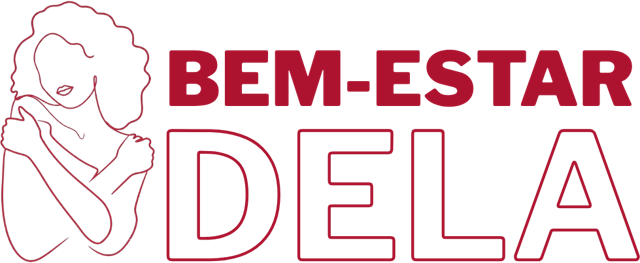
Identidade visual criada por mim
de adesão de gestantes no primeiro quadrimestre após o lançamento
pedidos de autorização para retirar absorventes
prêmios nacionais em 2026
Situação
Tarefa
Criar e liderar um programa que unisse benefícios dispersos em uma única jornada de cuidado, com parceiros externos, comunicação para a operação e acompanhamento da adesão.
Ação · 4 iniciativas
Dignidade Menstrual
Absorventes gratuitos nos banheiros da matriz, com retirada livre e privada, sem pedir autorização.
Gestar+
Acompanhamento voluntário e gratuito para gestantes com enfermeira de referência de um parceiro de saúde, via WhatsApp.
Mamãe Apetit
Diário do Bebê exclusivo para cada gestante. Ao recebê-lo, ela já é convidada para o Gestar+.
Cesta Natalidade
Kit de cuidados para a mãe e o bebê, biológico ou adotivo.
Design comportamental aplicado
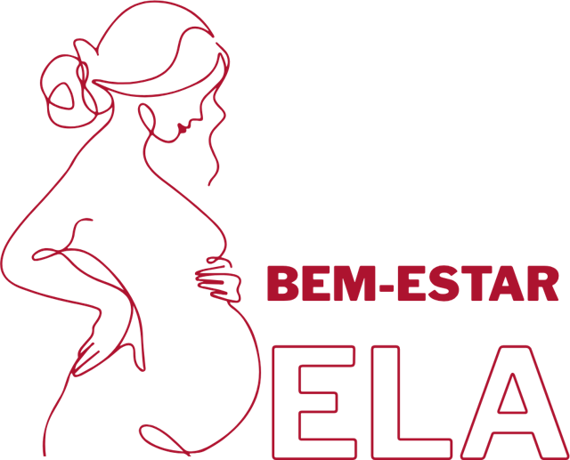
Fase 1 · Mês 1
Estruturação e parcerias
Integração entre o Mamãe Apetit e o Gestar+, alianças com parceiros de saúde e curadoria de palestras com o Marketing.
Fase 2 · Mês 2
Comunicação e lançamento
Campanha nos canais internos, treinamento das gerentes de unidade e palestra de lançamento sobre saúde feminina.
Fase 3 · Mês 3+
Operação e monitoramento
Ciclo mensal de palestras de saúde feminina e acompanhamento da adesão das gestantes.
Resultado
Lançado em 2026, o programa quebrou a tendência sazonal: no primeiro quadrimestre após o lançamento, a adesão de gestantes superou a dos mesmos períodos dos anos anteriores. O resultado mostra a atratividade do programa e a confiança gerada pela nova política de acolhimento, e rendeu os prêmios Woman’s Legacy 2026 e Mastercana Social 2026.
REGIÃO 04 · VALE DO CUIDADO · CONTINENTE APETIT
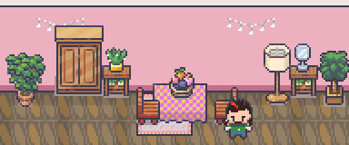
⚠ O DESAFIO · problema de negócio
A SAZONALIDADE SILENCIOSA
Todo ano, no meio do ano, a adesão de gestantes ao acompanhamento ficava parada.
☺ SEU PAPEL NA PARTY · meu papel
Criador da guilda & líder da campanha
Aliados: parceiros de saúde · Marketing · gerentes de unidade
◆ ITENS DE SUPORTE DESBLOQUEADOS · iniciativas
[PASSIVA]
Dignidade Menstrual
Acesso livre e privado. Atrito: zero.
[ALIADA]
Gestar+
Enfermeira de referência no WhatsApp.
[RELÍQUIA]
Diário do Bebê
Mamãe Apetit, com convite automático para o Gestar+.
[LOOT]
Cesta Natalidade
Kit mãe e bebê, biológico ou adotivo.
▣ FASES DA CAMPANHA · fases do projeto
✦ DESAFIO SUPERADO · resultado
A sazonalidade foi quebrada: no primeiro quadrimestre após o lançamento, a adesão de gestantes superou a de todos os anos anteriores no mesmo período.
NEW RECORD! · 2 TROFÉUS NACIONAIS
❓ E SE FOSSE VOCÊ? · desafio opcional, sem resposta errada
Uma empresa quer oferecer absorventes gratuitos às colaboradoras. Qual formato tende a gerar mais uso?
O CONCEITO POR TRÁS
Design comportamental vai além de pontos e medalhas. Às vezes a melhor mecânica é simplesmente remover barreiras.
🔓 BASTIDOR DESBLOQUEADO
No Bem-Estar DELA, nenhuma iniciativa usa pontos ou ranking. Em saúde, voluntariedade e privacidade vêm antes de qualquer mecânica de jogo.
OBJETIVO DE NEGÓCIO · 6Ds
Aumentar a adesão de gestantes ao acompanhamento de saúde e estruturar o acolhimento da saúde feminina.
COMPORTAMENTOS-ALVO
Retirar absorventes quando precisar, aderir ao Gestar+ e participar das palestras de saúde.
JOGADORES
Colaboradoras da matriz e das unidades, e gestantes em diferentes momentos da jornada.
DINÂMICAS → MECÂNICAS → COMPONENTES
Relacionamento e emoção (cuidado, pertencimento) → recompensa e feedback (enfermeira) → Diário do Bebê e Cesta. Nenhum ponto ou ranking, de propósito.
GATILHOS DE FOGG · B=MAT
Facilitadores: retirada livre, sem pedir autorização, e QR Code do Gestar+. Faísca: palestra de lançamento. Sinal: ciclo mensal de palestras.
AUTODETERMINAÇÃO
Vínculo: sentir-se cuidada pela empresa. Autonomia: tudo é voluntário e privado.
SAPC
Acesso (benefícios e enfermeira de referência) e Coisas entregues como gesto de cuidado, não como pagamento por comportamento. Isso evita o efeito de superjustificação.
ÉTICA
Em saúde, privacidade e voluntariedade vêm antes de qualquer mecânica. Nem todo design comportamental precisa de pontos.
Case 05 · Controladoria · Automação de processos
Dois projetos que nasceram na Controladoria, onde aprendi a gostar de dados: a automação das cartas de reajuste de preços e o Orçafácil, que automatizou a elaboração orçamentária.
Meu papel: líder dos dois projetos, do desenho do processo ao desenvolvimento das macros.
a menos em cada carta: poucos campos e a macro entrega o documento pronto
horas de trabalho manual liberadas na elaboração do orçamento
de preenchimento nas cartas geradas pela macro
Situação
Tarefa
Padronizar e automatizar as etapas repetitivas dos dois processos, reduzindo tempo e erro, e deixar a operação documentada para que qualquer pessoa da equipe pudesse executá-la.
Ação
Cartas de Reajuste
Orçafácil
Resultado
Números internos não são exibidos: os resultados aparecem de forma qualitativa.
REGIÃO 05 · FORJA DA AUTOMAÇÃO · CONTINENTE APETIT
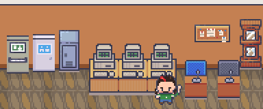
⚠ O DESAFIO · problema de negócio
O RETRABALHO INFINITO
Digitação repetida, cálculo em uma ferramenta e documento em outra, e a equipe inteira presa a calendários de orçamento.
☺ SEU PAPEL NA PARTY · meu papel
Ferreiro de macros & arquiteto de processos
Origem: Controladoria · onde o jogador aprendeu a gostar de dados
⚒ ARTEFATOS FORJADOS · os dois projetos
[ARTEFATO I]
Cartas de Reajuste
Preencha poucos campos → a macro calcula o reajuste e entrega a carta pronta.
menos tempo por carta · falhas evitadas
[ARTEFATO II]
Orçafácil
Captura, consolida e preenche o orçamento das unidades, com macros específicas por tema.
horas manuais liberadas · base pronta para dashboards
▣ MISSÕES CUMPRIDAS · entregas do Orçafácil
✦ LOOT DA VITÓRIA · resultados
⏱
muito menos tempo em cada carta de reajuste, sem as falhas do processo manual
⚙
horas manuais eliminadas a cada ciclo do orçamento
▦
base estruturada, pronta para dashboards e análises
❓ E SE FOSSE VOCÊ? · desafio opcional, sem resposta errada
Uma tarefa repetitiva leva vários minutos, se repete ao longo do ano inteiro e pode ter erros de digitação. O que tende a trazer mais ganho?
O CONCEITO POR TRÁS
Automatizar o repetitivo devolve tempo para o que exige julgamento humano. E prevenir o erro na origem (o "à prova de erro" da Engenharia de Produção) é mais eficaz do que corrigir no final.
🔓 BASTIDOR DESBLOQUEADO
Antes de automatizar, foi preciso padronizar: a macro só funciona porque o modelo pede apenas campos simples, e todo o resto (cálculos e formatação da carta) fica a cargo dela.
OBJETIVO DE NEGÓCIO · 6Ds
Liberar a equipe de análise de tarefas repetitivas e reduzir o risco de erro em documentos que chegam a clientes e no orçamento da empresa.
COMPORTAMENTO-ALVO
A equipe preenche só o essencial; cálculo, consolidação e formatação ficam com a automação.
FACILIDADE · FOGG (B=MAT)
Quanto menor o esforço, maior a adesão a um processo novo. A macro reduz a tarefa a poucos campos simples.
À PROVA DE ERRO · POKA-YOKE
Conceito da Engenharia de Produção: em vez de revisar no final, o processo é desenhado para o erro não acontecer.
SUPORTE · SCAFFOLDING
A documentação de uso garante que qualquer pessoa da equipe consiga operar o processo sem depender de quem o criou.
ÉTICA
Automação a serviço das pessoas: o tempo liberado volta para análise e decisão, que exigem julgamento humano.
Case 06 · Padronização operacional
Meu papel: líder do projeto, que assumi depois de cerca de dois anos parado.
S Situação
Os manuais operacionais das unidades estavam desatualizados, cada um em um formato, e o projeto de revisão estava parado havia cerca de dois anos.
T Tarefa
Retomar o projeto e redesenhar os manuais sem perder a essência original, transformando-os em uma base que permita análises.
A Ação
R Resultado
REGIÃO 06 · ARQUIVO DAS UNIDADES · REGIÃO MENOR
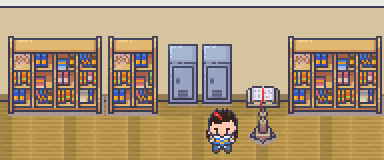
⚠ O DESAFIO · problema de negócio
O ARQUIVO ESQUECIDO
Manuais desatualizados e um projeto parado há dois anos.
☺ SEU PAPEL NA PARTY · meu papel
Restaurador de arquivos
▣ MISSÕES CUMPRIDAS · entregas
RETOMADA DE PROJETO
Projetos parados costumam travar por falta de clareza, não de vontade: o primeiro passo foi redefinir escopo e entregáveis.
PADRONIZAR PARA ANALISAR
Uma estrutura comum transforma documentos em dados: só o que é padronizado pode ser comparado.
MENOS ATRITO NA MANUTENÇÃO
Separar o que pode e o que não pode ser editado reduz erros e facilita atualizar o manual no dia a dia.
Case 07 · Comunicação interna · Engajamento
Uma plataforma de conexão para que restaurantes, indústrias e escritório se sintam parte da mesma empresa, e para que as ideias e o reconhecimento circulem nos dois sentidos.
Meu papel: líder do projeto.
Estruturação concluída · lançamento previsto para dezembro de 2026
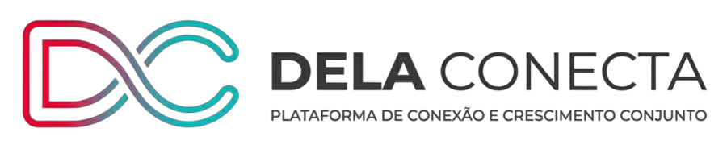
espaços por realidade: pátio, restaurantes, indústrias e administrativo
papéis de governança: administradores, editores e membros
níveis de badges, de Bronze a Diamante
canais dirigidos: notícias e RH
Situação
A distância física entre a holding e as unidades criava um abismo invisível: quem está na ponta se sentia só executor, ideias nascidas nas cozinhas não tinham canal, e o reconhecimento ficava restrito aos escritórios.
Tarefa
Criar um ambiente digital único, com governança clara, que transformasse isolamento em pertencimento e desse visibilidade a toda a empresa.
Ação
Ambiente unificado
Rede social corporativa com espaços segmentados para cada realidade da operação.
Governança
Grupos e papéis mapeados para toda a empresa: quem administra, quem publica, quem participa.
Jornada da Inovação
Trilhas de pontuação e um conjunto exclusivo de badges, de Bronze a Diamante.
Reconhecimento
Kudos (elogios públicos entre colegas), campanhas de embaixadores e canais dirigidos de notícias e de RH.
Resultado
REGIÃO 07 · PRAÇA DA CONEXÃO · CONTINENTE APETIT
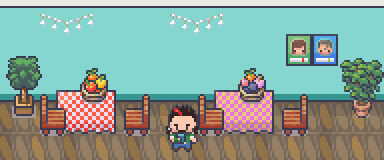
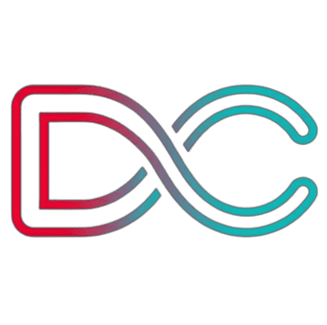
⚠ O DESAFIO · problema de negócio
O ABISMO INVISÍVEL
Ideias que morriam nas cozinhas e reconhecimento que não saía dos escritórios.
☺ SEU PAPEL NA PARTY · meu papel
Arquiteto da praça & designer da Jornada da Inovação
Desenhou os espaços, os papéis, as badges e a identidade visual da plataforma.
◆ JORNADA DA INOVAÇÃO · níveis de badges da plataforma
BRONZE
PRATA
OURO
PLATINA
DIAMANTE
▣ MISSÕES CUMPRIDAS · entregas
✦ LOOT EM PREPARO · resultados esperados
◷ STATUS: estruturação concluída · lançamento em dez/2026
◎
um canal de escuta da linha de frente, com espaço para cada realidade
★
reconhecimento entre colegas, em qualquer unidade
▲
progressão individual, sem ranking geral
❓ E SE FOSSE VOCÊ? · desafio opcional, sem resposta errada
Numa rede social interna, que tipo de reconhecimento tende a manter as pessoas participando por mais tempo?
O CONCEITO POR TRÁS
Reconhecimento social e sensação de pertencimento sustentam o engajamento por mais tempo do que prêmios ou rankings gerais.
🔓 BASTIDOR DESBLOQUEADO
As ações de embaixador (levar a empresa para as redes externas) foram desenhadas como participação voluntária, que é onde a gamificação tem mais potencial e menos risco de virar pressão.
OBJETIVO DE NEGÓCIO · 6Ds
Aproximar a holding da linha de frente: dar voz a quem está nas unidades, fazer ideias circularem e levar o reconhecimento para além dos escritórios.
COMPORTAMENTOS-ALVO
Publicar ideias, reconhecer colegas, participar dos espaços da sua área e, voluntariamente, representar a empresa nas redes externas.
JOGADORES
Restaurantes, indústrias e administrativo: rotinas, horários e acesso a telas muito diferentes. Por isso, espaços separados por realidade.
DINÂMICAS → MECÂNICAS → COMPONENTES
Relacionamento e progressão → cooperação e feedback → Kudos, trilhas de pontuação e badges de Bronze a Diamante.
SEM RANKING GERAL
A progressão por níveis mostra o avanço de cada pessoa em relação a si mesma, sem expor quem está atrás.
ÉTICA · ROSS SMITH
Embaixadores e Kudos são comportamentos de cidadania organizacional: voluntários, fora das obrigações do cargo, onde a gamificação engaja sem explorar.
Case 08 · Dados e sistemas
Meu papel: líder do projeto.
S Situação
O processo de reajustes dependia de planilhas operacionais que divergiam da base oficial do sistema, o que reduzia a precisão e a agilidade.
T Tarefa
Reestruturar o fluxo de dados no sistema e garantir uma transição segura para o novo processo.
A Ação
R Resultado
REGIÃO 08 · PORTO DOS CONTRATOS · REGIÃO MENOR
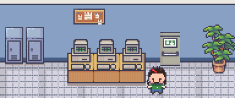
⚠ O DESAFIO · problema de negócio
AS CARTAS NÁUTICAS DIVERGENTES
Planilhas e sistema contando histórias diferentes sobre os mesmos contratos.
☺ SEU PAPEL NA PARTY · meu papel
Capitão do porto · guardião dos dados
▣ MISSÕES CUMPRIDAS · entregas
FONTE ÚNICA DA VERDADE
Quando duas bases discordam, ninguém confia em nenhuma: unificar é pré-requisito para qualquer indicador.
TESTAR ANTES DE VIRAR
Simular cenários reais reduz o risco do go-live e aumenta a confiança de quem vai usar o processo.
GESTÃO DA MUDANÇA
Manual do usuário e coleta de feedback dão suporte a quem precisa aprender o processo novo.
Case 09 · ESG ambiental · Mudança de hábito
Substituição dos copos descartáveis da matriz por canecas reutilizáveis de inox, com baixo investimento, retorno rápido e nenhuma perda para a rotina.
Meu papel: jogador principal, papel de execução na governança de projetos da empresa.
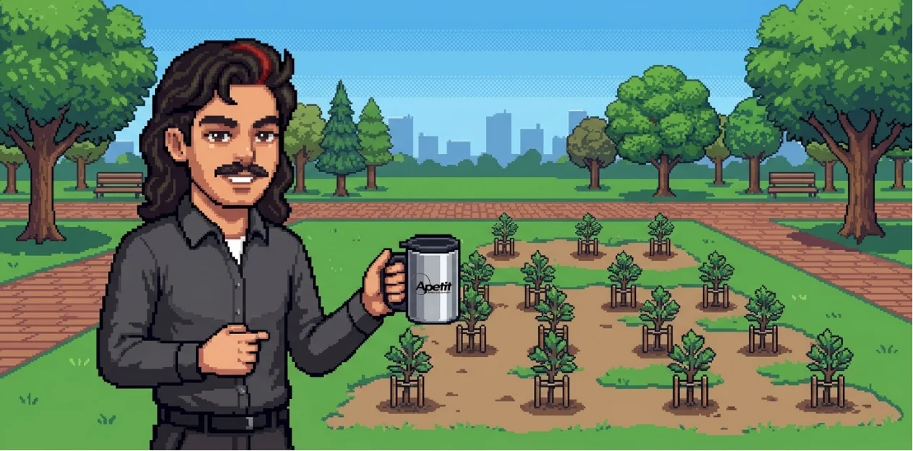
canecas de inox no lugar dos copos descartáveis
o investimento se pagou dentro do prazo projetado
de plástico, água e CO₂ ligados aos copos
resultado real conferido e alinhado à projeção
Situação
O uso excessivo de copos descartáveis na matriz gerava resíduo plástico e um custo operacional recorrente.
Tarefa
Reduzir o desperdício com baixo investimento e retorno rápido, estimulando o consumo consciente sem comprometer a operação.
Ação
Diagnóstico
Levantamento do consumo e do custo dos copos antes da mudança.
Business case
Projeção de economia, investimento e prazo de retorno.
Troca
Canecas de inox reutilizáveis para os colaboradores, com comunicação do impacto.
Medição real
Comparação entre o projetado e o real, com base nas notas fiscais, incluindo o impacto ambiental.
Resultado
Volumes e valores absolutos não são exibidos por se tratarem de dados internos.
REGIÃO 09 · BOSQUE REUTILIZÁVEL · CONTINENTE APETIT
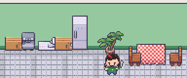
⚠ O DESAFIO · problema de negócio
A MONTANHA DE DESCARTÁVEIS
Copos usados por minutos e descartados para sempre, com custo que se repetia todo mês.
☺ SEU PAPEL NA PARTY · meu papel
Jogador principal
Um dos papéis da governança de projetos da empresa, ao lado de líderes, mentores e exploradores.
▣ MISSÕES CUMPRIDAS · entregas
✦ RESULTADOS · indicadores
♻
muito menos copos descartáveis
✔
investimento pago no prazo projetado
≈
projetado e real alinhados
❓ E SE FOSSE VOCÊ? · desafio opcional, sem resposta errada
Uma empresa quer que as pessoas usem menos copos descartáveis no escritório. O que tende a mudar mais o hábito?
O CONCEITO POR TRÁS
Para mudar um hábito, mudar o ambiente e facilitar a nova escolha costuma funcionar melhor do que apenas informar ou proibir.
🔓 BASTIDOR DESBLOQUEADO
O projeto foi medido duas vezes: a projeção inicial e o resultado real, com base nas notas fiscais. O real confirmou a projeção nos indicadores principais.
OBJETIVO DE NEGÓCIO · 6Ds
Reduzir resíduos e um custo recorrente com baixo investimento e retorno rápido, sem afetar a rotina.
COMPORTAMENTO-ALVO
Usar a própria caneca no lugar do copo descartável, todos os dias.
FACILITADOR · FOGG (B=MAT)
A caneca sempre à mão torna o hábito novo mais fácil do que o antigo. A comunicação do impacto funciona como faísca.
AUTODETERMINAÇÃO
Autonomia: ninguém é obrigado. Pertencimento: a caneca vira um símbolo visível de que a pessoa faz parte do movimento.
A CANECA NÃO É PRÊMIO
Ela é uma ferramenta, não uma recompensa: não há troca por comportamento, o que evita que o hábito dependa de incentivo.
GOVERNANÇA
Projeção antes, medição real depois: o resultado foi conferido com notas fiscais e confirmou a projeção.
Case 10 · Business Intelligence
Meu papel: líder do subprojeto e jogador principal no projeto de BI de Fechamento Operacional.
S Situação
O fechamento operacional ainda era feito manualmente, e as áreas interessadas não tinham acesso fácil às informações enquanto a automação completa não chegava.
T Tarefa
Disponibilizar as informações do fechamento em BI desde já, sem esperar a automação total.
A Ação
R Resultado
REGIÃO 10 · MIRANTE DOS DADOS · REGIÃO MENOR
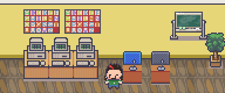
⚠ O DESAFIO · problema de negócio
A NÉVOA DO FECHAMENTO
Dados importantes presos em um processo manual, longe de quem precisava deles.
☺ SEU PAPEL NA PARTY · meu papel
Vigia do mirante
▣ MISSÕES CUMPRIDAS · entregas
ENTREGA INCREMENTAL
Em vez de esperar a solução ideal, entregar valor já e evoluir depois: o BI manual prepara o automatizado.
FEEDBACK CEDO
Com as informações visíveis desde o início, as áreas apontam o que realmente importa antes da automação.
SUBPROJETO COM PAPEL CLARO
Liderar a parte e jogar no todo: papéis definidos tornam a colaboração entre projetos mais fluida.
Outros projetos
Governança, comunicação interna, automação, ESG e dados. Abra qualquer um para ver o case completo.
Contato
Gamificação, design comportamental, gestão de projetos e dados aplicados a pessoas.
Por trás da versão jogável
A versão gamificada deste portfólio é um case de gamificação aplicado a ele mesmo, seguindo os 6 Ds de Kevin Werbach: um objetivo claro (você entender meu trabalho e conversarmos), comportamentos-alvo (explorar os cases e chegar ao contato), perfis de visitante (recrutamento, RH e inovação, entusiastas), feedback sem pontos e nenhum ranking. É opcional por princípio: gamificação começa pela voluntariedade.
▸ RELATÓRIO DO JOGADOR
SUA JORNADA
Classe: não escolhida
MAPA DE COMPETÊNCIAS
Competências que você viu em ação nas regiões exploradas:
🔓 BASTIDORES DESBLOQUEADOS · um por desafio respondido
★ PRÓXIMO PASSO
Gostou do que viu? O próximo nível é uma conversa.
1 · OBJETIVO DE NEGÓCIO
Que você entenda, em poucos minutos, como uno dados e design comportamental, e que isso termine numa conversa.
2 · COMPORTAMENTOS-ALVO
Explorar regiões, ver resultados medidos e chegar ao contato. O estado de vitória é este relatório.
3 · JOGADORES
Recrutadores com pouco tempo, gestores de RH e inovação, e quem quer ver a gamificação por dentro. Por isso existem classes e um Modo Executivo.
4 · CICLOS DE ATIVIDADE
Engajamento: visitar uma região → feedback (região marcada e novas competências). Progressão: embarque → rota no mapa → Lente do Designer.
5 · POR QUE SEM PONTOS E SEM RANKING
Pontos por rolar a tela seriam PBL vazio, e ranking entre visitantes não faria sentido nenhum. Aqui o feedback é informação: o que você já viu e o que falta.
6 · ÉTICA E VOLUNTARIEDADE
O Modo Gamificado é opcional e o seu progresso fica só no seu navegador. O site conta visitas e "ois" de forma anônima, sem cookies e sem identificar ninguém. O contador de ois mostra um marco pessoal, nunca um ranking.
PLAYER 1 READY
clique ou tecle para pular ▶▶